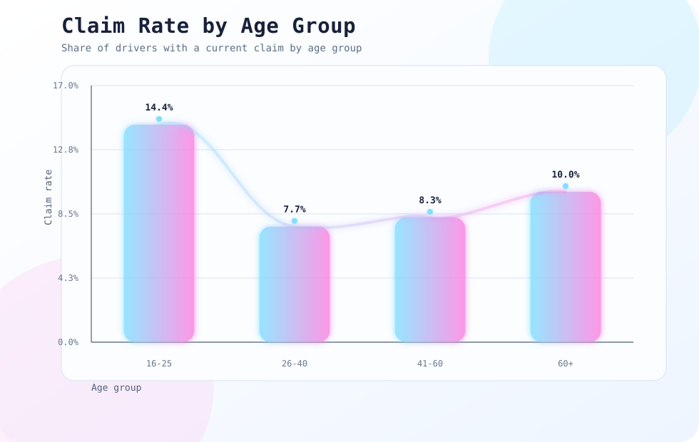

Goal
Driver age may relate to claim frequency, but claim counts need a model that respects count-data behavior.
portfolio project / statistical modeling
Modeled synthetic auto insurance claim frequency by age group using a reproducible Python pipeline, statistical testing, and count-data regression.
Driver age may relate to claim frequency, but claim counts need a model that respects count-data behavior.
Created a Python workflow that generates synthetic data, engineers features, compares age groups, and fits Poisson and Negative Binomial models.
Saved refreshed figures, summary tables, model output, and a public-ready README for a clean portfolio repo.
build notes
visual notes
These figures come from the auto-claims project output files.
